auto <- read.csv2("data/auto.csv")
attach(auto)
plot(Vendite, xlab="Anni", ylab="Milioni di auto vendute",
main="Vendite della G.M.", xaxt="n", type="l")
axis(1, at=1:24, lab=c(1975:1998))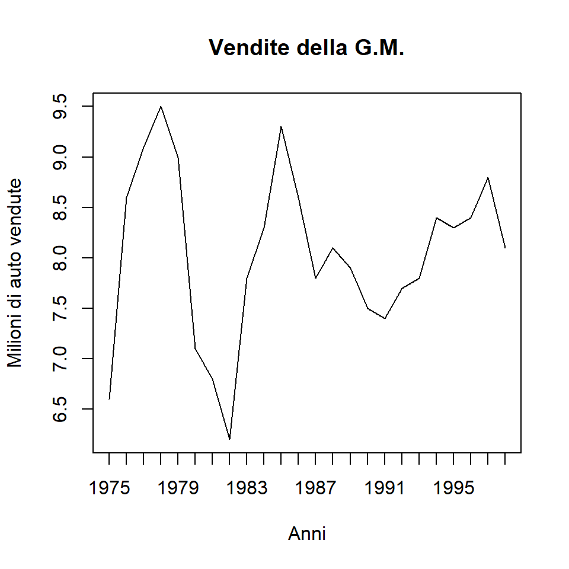
Un insieme di dati ordinato in base al tempo definisce una serie storica. Per esempio, l’andamento del PIL in Italia tra il 2000 e il 2008 rappresenta una serie storica con, in questo caso, una lunghezza di 8 periodi e 9 anni. La conoscenza di come e perché i fenomeni evolvono nel tempo consente di formulare ipotesi plausibili circa l’evoluzione futura e permette di porre in atto eventuali azioni correttive.
Gli approcci all’analisi delle serie storiche sono fondamentalmente di due tipi: il classico e il moderno (tralasciando qui il riferimento all’analisi spettrale). Il primo si è storicamente sviluppato attorno a considerazioni empiriche, con tecniche che trovano fondamento nell’osservazione e nell’esperienza dello studioso. L’idea alla base dell’approccio classico prevede la scomponibilità della serie in alcuni specifici fattori. Al contrario, nell’approccio moderno si ipotizza l’esistenza di un meccanismo generatore dei dati, di cui la serie storica osservata è una delle tante possibili realizzazioni e, se valgono alcuni assunti di partenza, risulta possibile trovare il modello statistico che rappresenta adeguatamente i dati; sull’approccio moderno torneremo più avanti.
Dicevamo che l’approccio classico prevede la scomponibilità in alcuni fattori, e precisamente
| \(Y\) | \(T\) | \(C\) | \(S\) | \(A\) |
|---|---|---|---|---|
| serie | trend | ciclo | stagionalità | residuo accidentale |
Il trend \(T\) è la componente più importante, poiché rappresenta la tendenza di fondo del fenomeno. Il ciclo \(C\) esprime oscillazioni ondulatorie che si dispiegano nel medio periodo; in economia può essere rappresentato con fasi di recessione e di espansione, ma non sempre si riesce a distinguerlo nettamente dal trend, tant’è che in molti casi trend e ciclo vengono trattati come un’unica componente trend-ciclo \(TC\). La stagionalità \(S\) è presente solo se la serie è composta da osservazioni infrannuali ed esprime la tipicità stagionale del fenomeno. Infine, la componente accidentale \(A\) (indicata talvolta anche con \(I\)) è un fattore residuale puramente casuale, attribuibile all’agire del caso o a errori non sistematici.
La combinazione di questi fattori avviene per il tramite di modelli additivi, moltiplicativi o misti (o di altre forme), rispettivamente
\[ \begin{gathered}Y=T+C+S+A \\ Y=T\cdot C\cdot S\cdot A \\ Y=T\cdot C+S+A\end{gathered} \tag{4.1} \]
Il modello additivo offre una maggiore semplicità di elaborazione, ma assume una meno probabile indipendenza logica dei fattori componenti; in tal senso, il modello moltiplicativo appare spesso il più opportuno per le serie storiche economiche. Va pure evidenziato che nel modello moltiplicativo, a differenza di quello additivo, soltanto la componente di trend (o trend-ciclo) ha la stessa unità di misura della serie \(Y\), mentre le componenti restanti hanno la forma di coefficienti privi di unità di misura; questo rende il modello moltiplicativo di facile lettura.
La Figura 4.1 rappresenta le vendite di auto della G.M. (General Motors) in alcuni anni; i valori sono riportati nel file auto.csv. Carichiamo i dati e rappresentiamo la serie Vendite.
import numpy as np
import pandas as pd
import matplotlib.pyplot as plt
auto = pd.read_csv("data/auto.csv", sep=";", decimal=",")
Vendite = auto["Vendite"]
plt.figure(figsize=(5, 5))
plt.plot(auto["Anno"], Vendite, color="black")
plt.xlabel("Anni"); plt.ylabel("Milioni di auto vendute")
plt.title("Vendite della G.M.")
plt.show()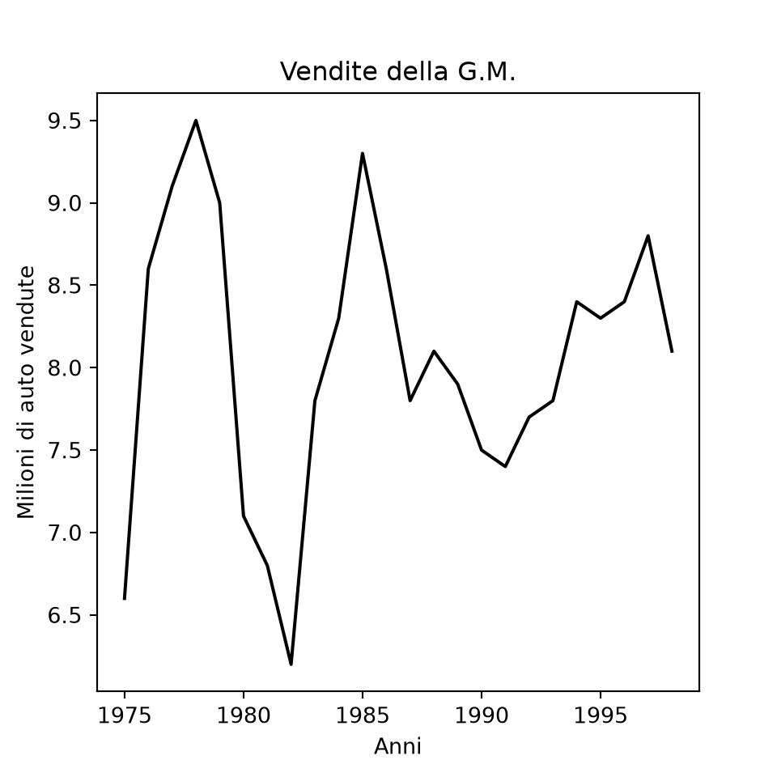
proc import datafile="data/auto.csv" out=auto dbms=dlm replace;
delimiter=";"; getnames=yes;
run;
/* la virgola decimale: se Vendite risulta carattere, convertirla con input(Vendite, commax8.) */
proc sgplot data=auto;
title "Vendite della G.M.";
series x=Anno y=Vendite;
xaxis label="Anni"; yaxis label="Milioni di auto vendute";
run;Per evidenziare la tendenza di fondo della serie dobbiamo ridurre le interferenze delle oscillazioni di breve e medio periodo. Un modo per compiere questa scrematura consiste nel filtraggio dei dati per il tramite, ad esempio, di una media calcolata su un certo numero di valori contigui, cioè una “media mobile” del tipo
\[ MA_{i}=(x_{i-1}+x_{i}+x_{i+1})/3 \qquad \text{nel caso di 3 termini} \tag{4.2} \]
La media mobile di ordine dispari è sempre centrata, nel senso che il valore risultante rappresenta il termine centrale tra quelli coinvolti nel calcolo, lasciando a sinistra e a destra un numero uguale di termini. È evidente che la media mobile non consente il calcolo dei valori posti alle estremità inferiore e superiore, per assenza di informazioni esterne al range osservato; con 3 termini salta il primo e l’ultimo valore, ma se consideriamo 5 termini invece di 3, ne mancheranno 2 a sinistra e 2 a destra. In genere, se \(L\) è il numero di termini contigui coinvolti nella media, ne perdiamo \((L-1)/2\) sia all’inizio sia alla fine della sequenza. Un numero più alto di termini smussa maggiormente la serie, rendendo più evidente la tendenza di fondo, ma fa perdere più dati all’inizio e alla fine del periodo sotto analisi.
Naturalmente si può ricorrere anche a medie mobili di ordine pari, ma con l’inconveniente che non risultano originariamente centrate; sul punto torneremo poco avanti.
Per applicare la media mobile ai dati della Figura 4.1 utilizzeremo la funzione filter(). Nel caso seguente è considerata una media mobile centrata di ordine 3 e poi di ordine 5; da notare la sintassi utilizzata con il comando di replicazione rep(). In altre parole, con la prima esecuzione stiamo sommando 3 valori contigui pesati 1/3, con la seconda 5 valori pesati 1/5.
Time Series:
Start = 1
End = 24
Frequency = 1
[1] NA 8.10 9.07 9.20 8.53 7.63 6.70 6.93 7.43 8.47 8.73 8.57 8.17 7.93 7.83
[16] 7.60 7.53 7.63 7.97 8.17 8.37 8.50 8.43 NATime Series:
Start = 1
End = 24
Frequency = 1
[1] NA NA 8.56 8.66 8.30 7.72 7.38 7.24 7.68 8.04 8.36 8.42 8.34 7.98 7.74
[16] 7.72 7.66 7.76 7.92 8.12 8.34 8.40 NA NA[ nan 8.1 9.07 9.2 8.53 7.63 6.7 6.93 7.43 8.47 8.73 8.57 8.17 7.93
7.83 7.6 7.53 7.63 7.97 8.17 8.37 8.5 8.43 nan][ nan nan 8.56 8.66 8.3 7.72 7.38 7.24 7.68 8.04 8.36 8.42 8.34 7.98
7.74 7.72 7.66 7.76 7.92 8.12 8.34 8.4 nan nan]/* PROC EXPAND (SAS/ETS): cmovave = media mobile centrata */
proc expand data=auto out=auto_mm method=none;
id Anno;
convert Vendite = mm3 / transformout=(cmovave 3 trimleft 1 trimright 1);
convert Vendite = mm5 / transformout=(cmovave 5 trimleft 2 trimright 2);
convert Vendite = mm9 / transformout=(cmovave 9 trimleft 4 trimright 4);
run;
proc print data=auto_mm noobs; format mm3 mm5 8.2; run;La relativa rappresentazione grafica (Figura 4.2) è ottenuta con i comandi seguenti. La linea continua rappresenta le vendite di auto della G.M. e le linee tratteggiate le due medie mobili a 3 e 5 termini (rispettivamente la più lunga e la più corta nel grafico).
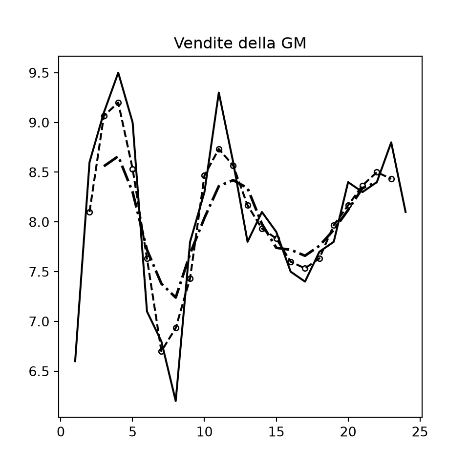
È evidente come la media mobile a 5 termini perda un numero maggiore di osservazioni, ma smussi meglio i dati di partenza alla ricerca della tendenza di fondo del fenomeno. Ancora più forte è lo smussamento offerto da una media di ordine più elevato, per esempio a 9 termini (Figura 4.3).
I dati originari e le medie mobili (mm) di ordine 3, 5, 7 e 9 sono riportati nella Tabella 4.1.
| Anni | Vendite | mm3 | mm5 | mm7 | mm9 |
|---|---|---|---|---|---|
| 1975 | 6,6 | ||||
| 1976 | 8,6 | 8,1 | |||
| 1977 | 9,1 | 9,1 | 8,6 | ||
| 1978 | 9,5 | 9,2 | 8,7 | 8,1 | |
| 1979 | 9,0 | 8,5 | 8,3 | 8,0 | 7,9 |
| 1980 | 7,1 | 7,6 | 7,7 | 7,9 | 8,0 |
| 1981 | 6,8 | 6,7 | 7,4 | 7,8 | 8,1 |
| 1982 | 6,2 | 6,9 | 7,2 | 7,8 | 8,1 |
| 1983 | 7,8 | 7,4 | 7,7 | 7,7 | 7,9 |
| 1984 | 8,3 | 8,5 | 8,0 | 7,8 | 7,8 |
| 1985 | 9,3 | 8,7 | 8,4 | 8,0 | 7,9 |
| 1986 | 8,6 | 8,6 | 8,4 | 8,3 | 7,9 |
| 1987 | 7,8 | 8,2 | 8,3 | 8,2 | 8,1 |
| 1988 | 8,1 | 7,9 | 8,0 | 8,1 | 8,1 |
| 1989 | 7,9 | 7,8 | 7,7 | 7,9 | 8,0 |
| 1990 | 7,5 | 7,6 | 7,7 | 7,7 | 7,9 |
| 1991 | 7,4 | 7,5 | 7,7 | 7,8 | 7,9 |
| 1992 | 7,7 | 7,6 | 7,8 | 7,9 | 7,9 |
| 1993 | 7,8 | 8,0 | 7,9 | 7,9 | 8,0 |
| 1994 | 8,4 | 8,2 | 8,1 | 8,1 | 8,0 |
| 1995 | 8,3 | 8,4 | 8,3 | 8,2 | |
| 1996 | 8,4 | 8,5 | 8,4 | ||
| 1997 | 8,8 | 8,4 | |||
| 1998 | 8,1 |
È evidente dalla Figura 4.3 e da quanto riportato nella Tabella 4.1 che nella serie non è presente alcuna chiara tendenza alla crescita o alla riduzione nel lungo periodo.
Un altro modo per smussare i valori della serie alla ricerca di andamenti di lungo periodo è ricorrere alla tecnica del lisciamento (o smussamento) esponenziale. La tecnica è particolarmente interessante poiché consente, a differenza del caso precedente, di effettuare previsioni a breve termine. Il modello più semplice si applica di preferenza a dati senza stagionalità e in assenza di un trend particolarmente marcato. Il lisciamento esponenziale altro non è che una media mobile ponderata esponenzialmente
\[ M_{t}=\alpha x_{t}+(1-\alpha )M_{t-1} \tag{4.3} \]
dove \(0<\alpha <1\) e \(M_{1}=x_{1}\), e
Con un \(\alpha\) basso si ottiene un buon filtraggio delle fluttuazioni casuali, mentre con un \(\alpha\) alto si ottiene un rapido adattamento nel caso di variazioni sistematiche della serie storica. Un valore di \(\alpha\) prossimo a 0 consente un elevato smussamento, mentre un valore prossimo a 1 enfatizza le oscillazioni di breve periodo; il valore previsto nel primo periodo successivo ai valori osservati si fa coincidere con l’ultimo valore smussato
\[ F_{t+1}=\hat{x}_{t+1}=M_{t} \tag{4.4} \]
La tecnica si può utilizzare in modo ricorsivo per produrre previsioni su più periodi, ma in tal modo cresce sempre più la probabilità di una previsione errata.
Seguendo l’esempio delle vendite G.M., con \(\alpha = 0{,}25\) avremo
La previsione delle vendite al tempo \(t+1\) (1999) è di 8,24 milioni di auto, ossia il valore smussato corrispondente all’ultimo tempo osservato. Inoltre, la Figura 4.4 confronta la serie originaria Vendite con quella smussata \(M\), ed è da notare come, a differenza delle semplici medie mobili, non vi sia perdita di valori a inizio e fine serie.
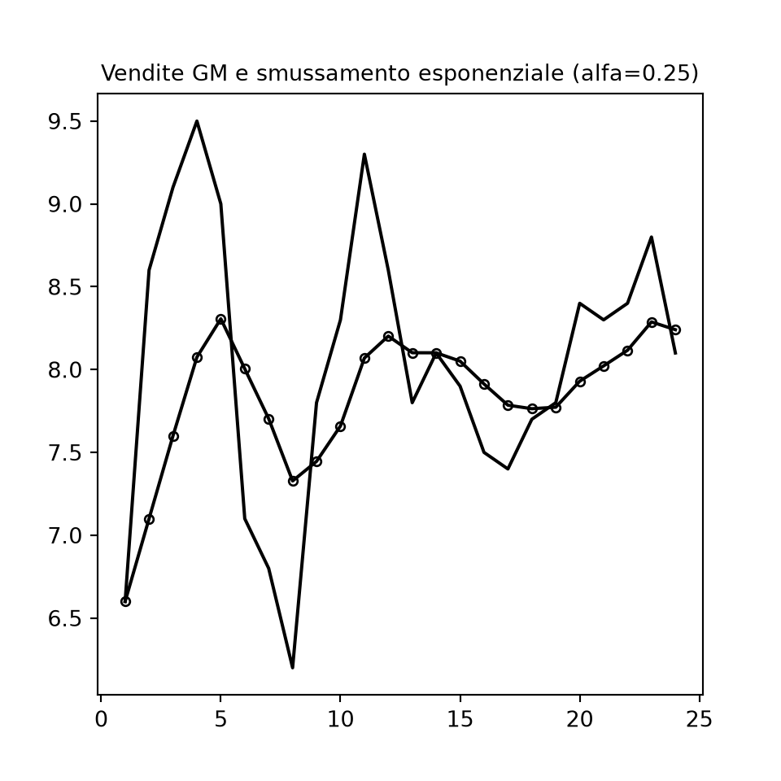
La Tabella 4.2 confronta l’esito del calcolo con valori di \(\alpha\) uguali a 0,10, 0,50 e 0,90.
| Anni | Tempi | Vendite | M(0,10) | M(0,50) | M(0,90) |
|---|---|---|---|---|---|
| 1975 | 1 | 6,6 | 6,6 | 6,6 | 6,6 |
| 1976 | 2 | 8,6 | 6,8 | 7,6 | 8,4 |
| 1977 | 3 | 9,1 | 7,0 | 8,3 | 9,0 |
| 1978 | 4 | 9,5 | 7,3 | 8,9 | 9,5 |
| 1979 | 5 | 9,0 | 7,4 | 9,0 | 9,0 |
| 1980 | 6 | 7,1 | 7,4 | 8,0 | 7,3 |
| 1981 | 7 | 6,8 | 7,4 | 7,4 | 6,8 |
| 1982 | 8 | 6,2 | 7,2 | 6,8 | 6,3 |
| 1983 | 9 | 7,8 | 7,3 | 7,3 | 7,6 |
| 1984 | 10 | 8,3 | 7,4 | 7,8 | 8,2 |
| 1985 | 11 | 9,3 | 7,6 | 8,6 | 9,2 |
| 1986 | 12 | 8,6 | 7,7 | 8,6 | 8,7 |
| 1987 | 13 | 7,8 | 7,7 | 8,2 | 7,9 |
| 1988 | 14 | 8,1 | 7,7 | 8,1 | 8,1 |
| 1989 | 15 | 7,9 | 7,8 | 8,0 | 7,9 |
| 1990 | 16 | 7,5 | 7,7 | 7,8 | 7,5 |
| 1991 | 17 | 7,4 | 7,7 | 7,6 | 7,4 |
| 1992 | 18 | 7,7 | 7,7 | 7,6 | 7,7 |
| 1993 | 19 | 7,8 | 7,7 | 7,7 | 7,8 |
| 1994 | 20 | 8,4 | 7,8 | 8,1 | 8,3 |
| 1995 | 21 | 8,3 | 7,8 | 8,2 | 8,3 |
| 1996 | 22 | 8,4 | 7,9 | 8,3 | 8,4 |
| 1997 | 23 | 8,8 | 8,0 | 8,5 | 8,8 |
| 1998 | 24 | 8,1 | 8,0 | 8,3 | 8,2 |
Una semplice alternativa per effettuare previsioni ricorre alla stima dei minimi quadrati per trovare un modello interpolante i dati, da cui estrarre la proiezione al periodo successivo; naturalmente, stiamo dando per acquisita la possibilità di stimare correttamente il modello con il metodo OLS.
Utilizziamo ancora le serie contenute in auto.csv. I comandi seguenti trovano i valori teorici della retta interpolante e aggiungono la previsione (o, meglio, una proiezione) al periodo 24, in corrispondenza del tempo 25; infatti, l’indice Codice va da 0 (primo anno) a 23 (ventiquattresimo anno). Notiamo che l’indice di tempo può essere definito in modo arbitrario, fermo restando l’attenzione alla corretta interpretazione delle stime.
[1] 0 1 2 3 4 5 6 7 8 9 10 11 12 13 14 15 16 17 18 19 20 21 22 23 1 2 3 4 5 6 7 8 9 10 11 12 13 14 15 16
7.96 7.97 7.97 7.98 7.99 8.00 8.00 8.01 8.02 8.03 8.03 8.04 8.05 8.06 8.06 8.07
17 18 19 20 21 22 23 24 25
8.08 8.09 8.09 8.10 8.11 8.12 8.12 8.13 8.14 [7.96 7.97 7.97 7.98 7.99 8. 8. 8.01 8.02 8.03 8.03 8.04 8.05 8.06
8.06 8.07 8.08 8.09 8.09 8.1 8.11 8.12 8.12 8.13 8.14]/* si aggiunge una riga con Vendite mancante: PROC REG ne calcola il valore previsto */
data auto_prev;
set auto end=fine;
output;
if fine then do; Anno = 1999; Codice = 24; Vendite = .; output; end;
run;
proc reg data=auto_prev;
model Vendite = Codice;
output out=prev p=previsto;
run;
quit;
proc print data=prev noobs; var Anno Codice Vendite previsto; format previsto 8.2; run;La Figura 4.5 rappresenta la serie e la retta estrapolata. Il valore teorico di 8,14 milioni di auto è la previsione per l’anno 1999.
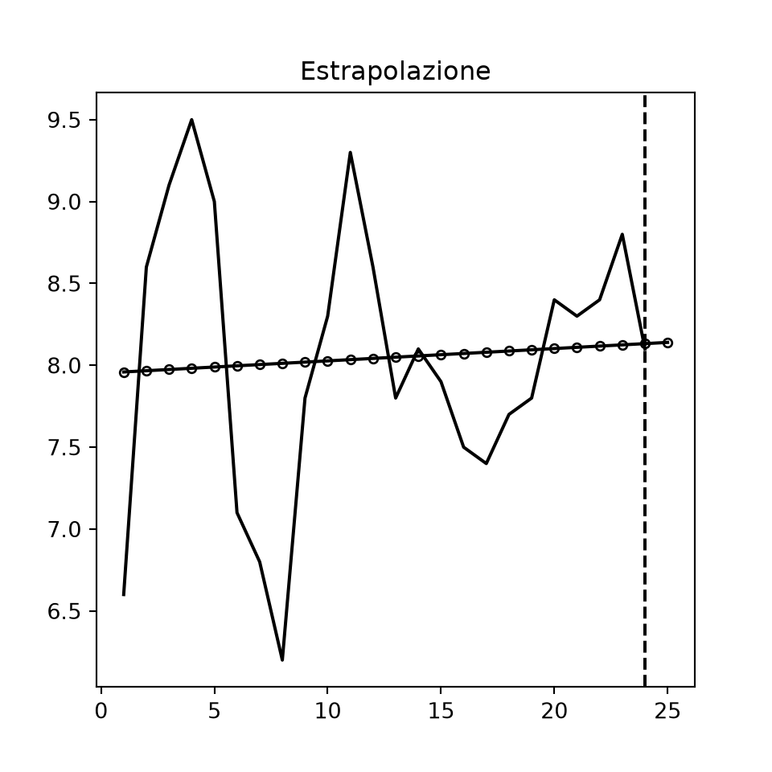
La retta di trend appare appena crescente; nella serie (come visto anche in precedenza) non appare una tendenza evidente; infatti il coefficiente della variabile Codice, che rappresenta l’inclinazione della retta interpolante, non risulta statisticamente diverso da zero (p-value 0,769).
==============================================================================
coef std err t P>|t| [0.025 0.975]
------------------------------------------------------------------------------
Intercept 7.9593 0.340 23.438 0.000 7.255 8.664
Codice 0.0075 0.025 0.297 0.769 -0.045 0.060
==============================================================================Va notato che, quando la notazione non crea ambiguità, R è in grado di interpretare correttamente alcuni comandi di richiamo anche se non riportati per esteso. Perciò, $coefficients può diventare $coeff o, come per il comando precedente, $coef.
Poiché vogliamo individuare la direzione di movimento di lungo periodo senza preoccuparci troppo della capacità di adattamento ai dati, la tendenza di una serie è generalmente rappresentabile con una retta; tuttavia, nel medio-lungo periodo appare ragionevole cercare anche tendenze non lineari. La ricerca di una tendenza non lineare diventa una necessità quando trend e ciclo non vengono trattati quali componenti separate, e quindi l’oscillazione (non stagionale) della serie deve essere colta nella stima del modello. Una forte motivazione vi è anche nella ricerca di un trend di lungo periodo: ad esempio, se nel corso di 30 anni il trend avesse cambiato direzione a metà periodo, con un modello lineare rischieremmo di non cogliere adeguatamente la direzione attuale né di essere in grado di prevedere correttamente la direzione futura della serie; in tali condizioni, un trend non lineare aiuterebbe a trarre conclusioni più affidabili.
Carichiamo i dati sulle entrate contabili della società Kodak per gli anni 1975-1998, contenuti nel file entrate.csv. Rilasciamo l’ipotesi di tendenza lineare e ricerchiamo, adesso, anche un trend quadratico. La Figura 4.6 rappresenta la serie originaria e i valori teorici del trend lineare \(Y=a+bt\) e di quello quadratico \(Y=a+bt+ct^{2}\), che appare subito molto più informativo e utile per una migliore previsione.
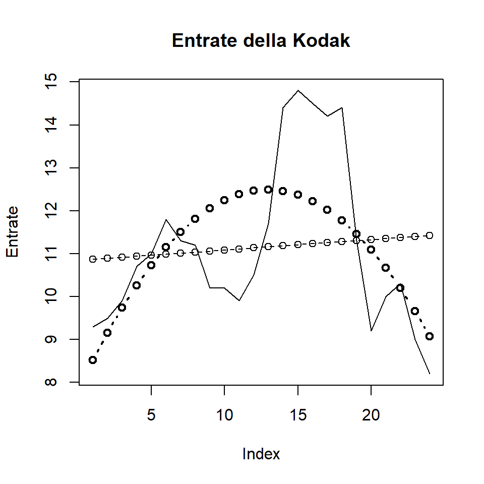
entrate = pd.read_csv("data/entrate.csv", sep=";", decimal=",")
trendlin = smf.ols("Entrate ~ Codice", data=entrate).fit()
trendqua = smf.ols("Entrate ~ Codice + I(Codice**2)", data=entrate).fit()
plt.figure(figsize=(5, 5))
plt.plot(t, entrate["Entrate"], color="black")
plt.plot(t, trendlin.fittedvalues, "o--", color="black", markerfacecolor="none", markersize=4)
plt.plot(t, trendqua.fittedvalues, "o-.", color="black", linewidth=2, markersize=4)
plt.title("Entrate della Kodak")
plt.show()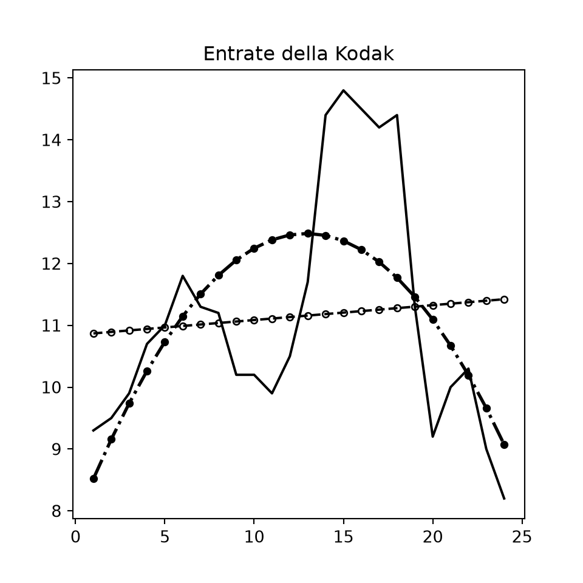
proc import datafile="data/entrate.csv" out=entrate dbms=dlm replace;
delimiter=";"; getnames=yes;
run;
data entrate; set entrate; Codice2 = Codice**2; run;
proc reg data=entrate noprint;
lin: model Entrate = Codice;
output out=fit_lin p=trendlin;
run;
proc reg data=fit_lin noprint;
qua: model Entrate = Codice Codice2;
output out=fit_ent p=trendqua;
run;
quit;
proc sgplot data=fit_ent;
title "Entrate della Kodak";
series x=Anni y=Entrate;
series x=Anni y=trendlin / markers lineattrs=(pattern=dash);
series x=Anni y=trendqua / markers lineattrs=(pattern=dashdotdot thickness=2);
run;Tuttavia, se i valori della serie crescessero nel tempo in forma esponenziale, sarebbe ragionevole rappresentare il trend con \(Y=ab^{t}\) (da linearizzare tramite logaritmi).
L’inclinazione del modello linearizzato, opportunamente ritrasformata con l’antilogaritmo, rappresenta il tasso di variazione annuo composto della tendenza della serie (0,12%). Il grafico risultante (Figura 4.7) è ottenuto con i soliti comandi.
Evidentemente l’ipotesi di trend esponenziale non è realistica per la serie in esame.
Qualora a fini interpretativi trovassimo plausibile sia un trend lineare sia uno non lineare, un metodo semplice per scegliere tra lineare, quadratico ed esponenziale è basato sulle differenze prime, seconde e relative. In buona sostanza, un trend lineare segue bene la serie se le differenze prime dei valori sono pressoché costanti; lo stesso avviene con le differenze seconde per il trend quadratico, mentre il trend esponenziale si accompagna a differenze relative costanti.
Tornando al nostro esempio, nessuna delle tre differenze appare di specifica utilità nel suggerire una forma di trend rispetto a un’altra, anche se il trend quadratico ci appare subito di maggiore interesse, poiché coglie la riduzione nei valori della serie. È evidente che un metodo deterministico di questo tipo è generalmente poco efficiente. Se comunque si volesse ricercare il miglior trend ritenendo plausibili le tre forme, si potrebbe ricorrere all’analisi delle stime OLS dei coefficienti e delle statistiche di adattamento dei modelli corrispondenti.
Procediamo in questa direzione con un esempio sul file pil.csv, che contiene il PIL dell’Italia in milioni di euro costanti 2000 e la popolazione residente in migliaia di unità tra gli anni 1982 e 2007. Otteniamo il PIL pro capite quale proxy dello sviluppo di un territorio e ricerchiamone il trend lineare e quadratico. La solita funzione summary() consente di evidenziare alcuni risultati di interesse.
Estimate Std. Error t value Pr(>|t|)
(Intercept) 14.6046740 0.18752451 77.88141 2.268015e-30
tempo 0.3017544 0.01214266 24.85077 1.232045e-18 Estimate Std. Error t value Pr(>|t|)
(Intercept) 13.685531909 0.172523783 79.325480 1.486763e-29
tempo 0.498713448 0.029447115 16.935902 1.752905e-14
tempo2 -0.007294779 0.001058591 -6.891023 5.020283e-07==============================================================================
coef std err t P>|t| [0.025 0.975]
------------------------------------------------------------------------------
Intercept 14.6047 0.188 77.881 0.000 14.218 14.992
tempo 0.3018 0.012 24.851 0.000 0.277 0.327
===============================================================================================================================================================
coef std err t P>|t| [0.025 0.975]
---------------------------------------------------------------------------------
Intercept 13.6855 0.173 79.325 0.000 13.329 14.042
tempo 0.4987 0.029 16.936 0.000 0.438 0.560
I(tempo ** 2) -0.0073 0.001 -6.891 0.000 -0.009 -0.005
=================================================================================Come indicato dai corrispondenti p-value, tutte le stime appaiono statisticamente significative. Se il modello viene utilizzato nel breve periodo anche a scopi previsivi, è opportuno scegliere quello che meglio si adatta ai dati. Rinviamo l’analisi statistica dei modelli lineari a una successiva sezione, soffermandoci qui soltanto su un indice di adattamento basato sulla deviazione dei valori teorici da quelli osservati
\[ MAD=\sum_{i=1}^{n} \left|y_{i}-\hat{y}_{i}\right|/n \tag{4.5} \]
che in R si calcola così
/* valori teorici dei due modelli e media degli scarti assoluti */
proc reg data=pil noprint;
model pilpro = tempo; output out=f1 p=yl;
run;
proc reg data=f1 noprint;
model pilpro = tempo tempo2; output out=f2 p=yq;
run;
quit;
data f2; set f2; ass_l = abs(pilpro - yl); ass_q = abs(pilpro - yq); run;
proc means data=f2 mean; var ass_l ass_q; run;dove \(yl\) e \(yq\) sono gli oggetti che contengono i valori teorici rispettivamente del trend lineare e quadratico. Nel nostro caso otteniamo un MAD di 0,38 per il trend lineare e di 0,21 per il modello quadratico; quest’ultimo è dunque da preferire.
L’esempio del PIL pro capite ci consente un’osservazione e un rinvio su alcune conseguenze della mal-specificazione dei modelli. Stimiamo il trend con una forma cubica.
Call:
lm(formula = pilpro ~ tempo + tempo2 + tempo3)
Residuals:
Min 1Q Median 3Q Max
-0.45065 -0.16529 -0.06512 0.21503 0.51625
Coefficients:
Estimate Std. Error t value Pr(>|t|)
(Intercept) 1.376e+01 2.519e-01 54.617 < 2e-16 ***
tempo 4.687e-01 7.929e-02 5.911 5.99e-06 ***
tempo2 -4.567e-03 6.756e-03 -0.676 0.506
tempo3 -6.735e-05 1.647e-04 -0.409 0.686
---
Signif. codes: 0 '***' 0.001 '**' 0.01 '*' 0.05 '.' 0.1 ' ' 1
Residual standard error: 0.276 on 22 degrees of freedom
Multiple R-squared: 0.9879, Adjusted R-squared: 0.9862
F-statistic: 598 on 3 and 22 DF, p-value: < 2.2e-16 OLS Regression Results
==============================================================================
Dep. Variable: pilpro R-squared: 0.988
Model: OLS Adj. R-squared: 0.986
Method: Least Squares F-statistic: 598.0
Date: sab, 31 ott 2026 Prob (F-statistic): 3.17e-21
Time: 20:08:50 Log-Likelihood: -1.2503
No. Observations: 26 AIC: 10.50
Df Residuals: 22 BIC: 15.53
Df Model: 3
Covariance Type: nonrobust
=================================================================================
coef std err t P>|t| [0.025 0.975]
---------------------------------------------------------------------------------
Intercept 13.7594 0.252 54.617 0.000 13.237 14.282
tempo 0.4687 0.079 5.911 0.000 0.304 0.633
I(tempo ** 2) -0.0046 0.007 -0.676 0.506 -0.019 0.009
I(tempo ** 3) -6.735e-05 0.000 -0.409 0.686 -0.000 0.000
==============================================================================
Omnibus: 1.734 Durbin-Watson: 0.642
Prob(Omnibus): 0.420 Jarque-Bera (JB): 1.451
Skew: 0.428 Prob(JB): 0.484
Kurtosis: 2.222 Cond. No. 3.44e+04
==============================================================================
Notes:
[1] Standard Errors assume that the covariance matrix of the errors is correctly specified.
[2] The condition number is large, 3.44e+04. This might indicate that there are
strong multicollinearity or other numerical problems.È interessante notare che né il termine di secondo né quello di terzo grado risultano statisticamente significativi. Inoltre, le stime dell’intercetta e del primo coefficiente sono molto diverse da quanto ottenuto nei casi precedenti; questo è uno dei segnali tipici di una mal-specificazione: l’introduzione del termine di terzo grado peggiora di molto la bontà del modello e altera tutte le stime. Le ragioni di tale anomalo risultato saranno discusse in altre sezioni del testo.
Continuiamo la trattazione dell’approccio classico alle serie storiche analizzando fenomeni con componente stagionale. Per una maggiore facilità nell’interpretazione del risultato scegliamo un modello di tipo moltiplicativo.
Data la serie storica \(Y\), qui interessa individuarne le componenti. L’utilizzo di una media mobile consente di individuare il trend, o meglio il trend-ciclo, ma la scelta dell’ordine della media è questione di non univoca soluzione. Si può scegliere una media mobile di 3 termini, con il vantaggio di perdere una sola osservazione a inizio e a fine periodo, mentre un ordine superiore consente di lisciare meglio i dati, ma fa perdere un numero maggiore di osservazioni. La scelta dell’ordine dipende molto dalla forza di lisciamento desiderata, ma anche dalla bassa o alta numerosità delle osservazioni disponibili.
Se è presente la componente stagionale, l’ordine della media mobile deve tenere conto della periodicità stagionale, per essere certi che il filtraggio della serie, corrispondendo alla lunghezza della stagione, annichilisca la componente stagionale senza introdurre distorsioni nel trend-ciclo. Dunque, l’ordine della media sarà uguale a 12 per dati mensili, 4 per dati trimestrali, 2 per dati semestrali, ecc. e, poiché in genere abbiamo termini in numero pari, occorrerà anche procedere a una centratura della media mobile, per garantire che il valore della media stessa sia univocamente attribuibile al tempo corrispondente, appunto, al centro della media, senza ambiguità. Conseguentemente, con una media mobile di 4 termini la centratura equivale al calcolo di una media aritmetica di due medie mobili contigue di 4 termini, ovvero a una media ponderata di 5 termini in cui il primo e l’ultimo ricevono un peso di 0,5 (quindi alla fine mancheranno due valori in testa e due valori in coda nella serie delle medie mobili)
\[ MM(4)_{C}=(0{,}5\cdot x_{1}+x_{2}+x_{3}+x_{4}+0{,}5\cdot x_{5})/4 \tag{4.6} \]
L’uso di una media mobile di ordine uguale all’ampiezza del periodo stagionale è di intuitiva giustificazione poiché, come detto, la serie va filtrata eliminando l’effetto stagionale senza introdurre distorsioni, come farebbe, al contrario, una media mobile di ordine non uguale al periodo stagionale: per esempio, con dati trimestrali una media mobile di ordine 3 ometterebbe sempre un qualche trimestre, mentre una di ordine 5 lo includerebbe due volte.
Ottenuto dunque il trend o il trend-ciclo, poiché \(Y=T\cdot C\cdot S\cdot A\), la componente stagionale lorda (comprensiva della componente erratica) è presto determinata
\[ SA=Y/(T\cdot C) \tag{4.7} \]
Va subito notato che per costruzione \(SA\) è un numero indice che oscilla attorno all’unità ed è privo dell’unità di misura nella quale è espressa \(Y\). Nel caso di un modello additivo poco cambia, dovendo stavolta sottrarre e non dividere
\[ SA=Y-(T + C) \tag{4.8} \]
In questo caso \(SA\) ha la stessa unità di misura di \(Y\); dunque la preferenza per un modello moltiplicativo semplifica anche questo punto.
La componente stagionale ottenuta è variabile, poiché i valori cambiano leggermente tra gli stessi periodi di anni diversi, mentre è del tutto controintuitivo osservare ampie oscillazioni: non c’è una ragione robusta per la quale, soprattutto nel breve periodo, la stagione debba presentare forti cambiamenti da un anno all’altro; anzi, se questo accade, la variazione non è certo attribuibile alle componenti stagionali in quanto tali. Nei fatti, le oscillazioni stagionali sono spesso numericamente piuttosto contenute rispetto ai valori medi della serie, e parecchio simili tra un anno e l’altro; dunque non è fuorviante intendere il fenomeno stagionale quale fenomeno a evoluzione costante. In tal maniera, anche per serie stagionali molto lunghe, è comodo e ragionevole rappresentare la periodicità stagionale con valori unici, per esempio 12 valori nel caso di stagionalità mensile, 4 per i trimestri, 2 per i semestri, ecc., semplicemente mediando nello stesso periodo stagionale.
Questa semplificazione consiste nell’applicare medie aritmetiche sullo stesso fattore stagionale anno dopo anno: ad esempio, nel caso di dati mensili si calcola la media di ogni fattore stagionale di gennaio per tutti gli anni della serie; allo stesso modo per febbraio, e così sino a dicembre, ottenendo 12 valori unici (uno per mese) che sostituiscono i singoli fattori stagionali che, per l’appunto, compongono queste medie. Può darsi però, per mere ragioni di approssimazione numerica, che la somma di questi nuovi coefficienti di stagionalità costante non corrisponda esattamente a 12 (con modello moltiplicativo, o a 0 nel caso del modello additivo), come invece dovrebbe, rappresentando essi un fenomeno stagionale che nasce e muore dentro l’anno. Poiché la stagionalità è un fenomeno che deve esaurirsi all’interno dell’anno, i fattori stagionali inferiori all’unità (sotto lo 0 per il modello additivo) devono essere compensati dai fattori stagionali superiori all’unità (sopra lo 0 per il modello additivo), e dunque la loro somma deve essere uguale a 4 nel caso di trimestri, 3 per i quadrimestri, 12 per i mesi, ecc., oppure a 0 per il modello additivo. Questo può non accadere per ragioni di approssimazione numerica e quindi, fermo restando la bontà dell’ipotesi di stagionalità costante, si può compiere una correzione basata su un criterio di proporzionalità.
Nello specifico, ipotizziamo una serie trimestrale di 3 anni; riportiamo nel prospetto seguente i fattori stagionali ottenuti tramite il rapporto \(Y/(T\cdot C)\), in cui il trend-ciclo è una media mobile di 4 termini centrata. Mancano ovviamente i primi due e gli ultimi due valori:
| fattore stagionale | 1 | 2 | 3 | 4 |
|---|---|---|---|---|
| 1° anno | – | – | a | b |
| 2° anno | c | d | e | f |
| 3° anno | g | h | – | – |
| media | \(m_1\) | \(m_2\) | \(m_3\) | \(m_4\) |
con \(m_1 + m_2 + m_3 + m_4 = somma\). Calcoliamo la media per ogni colonna; la somma delle medie dovrebbe risultare esattamente 4, cioè il periodo stagionale, a meno di piccole fluttuazioni: per esempio, è ragionevole ottenere 4,01 oppure 3,90, giusto per seguire qui una spiegazione intuitiva, ma non certo un valore di 2 o di 7, cioè molto distante da 4; in effetti non c’è mai una grande distanza dal valore teorico. A questo punto, la differenza tra il 4 teorico e quanto effettivamente ottenuto viene spalmata sui 4 trimestri secondo un criterio di proporzionalità
\[ m_{i}\cdot 4/somma \qquad \text{per ogni } i \text{ da 1 a 4} \tag{4.9} \]
Si ottengono così gli indici “corretti” di stagionalità, uguali di anno in anno, la cui somma, per costruzione, è adesso esattamente uguale a 4. Questa procedura vale per qualsiasi altra ampiezza stagionale.
Sfruttando le tecniche appena descritte, scomponiamo la serie trimestrale del tasso di disoccupazione in Italia tra gli anni 1998 e 2003, riportata nel file td.csv. Calcoliamo il trend-ciclo tramite media mobile di ordine 4 centrata (mancano i primi due e gli ultimi due valori della serie).
[1] NA NA 11.3250 11.2750 11.1875 11.0500 10.8875 10.7250 10.5125
[10] 10.2750 9.9875 9.6750 9.4000 9.1875 9.0000 8.8500 8.7500 8.6500
[19] 8.6375 8.6250 8.5375 8.4750 NA NA[ nan nan 11.325 11.275 11.1875 11.05 10.8875 10.725 10.5125
10.275 9.9875 9.675 9.4 9.1875 9. 8.85 8.75 8.65
8.6375 8.625 8.5375 8.475 nan nan]proc import datafile="data/td.csv" out=td dbms=dlm replace;
delimiter=";"; getnames=yes;
run;
/* media mobile centrata di ordine 4 = pesi 1/8, 1/4, 1/4, 1/4, 1/8 */
proc expand data=td out=td_mm method=none;
id tempo;
convert td9803 = mm4c / transformout=(cmovave (0.125 0.25 0.25 0.25 0.125)
trimleft 2 trimright 2);
run;
proc print data=td_mm noobs; run;Otteniamo i fattori stagionali.
Per ragioni computazionali sostituiamo i valori mancanti con 0 e calcoliamo i 4 fattori di stagionalità costante tramite un ciclo for(), sommando i valori ottenuti; poi correggiamo i fattori imponendo che la loro somma sia uguale al valore teorico di 4, cioè il numero dei trimestri.
[1.02974639 1.00711843 0.96697457 0.9965673 ] 4.0004066908574965[1.02964171 1.00701604 0.96687627 0.99646598] 4.0Gli indici corretti (ICS) mostrano l’effetto dei 4 trimestri sul livello del tasso di disoccupazione; in particolare, il primo e il secondo trimestre agiscono accrescendo il tasso, mentre il terzo e il quarto lo riducono. Ottenuti gli ICS, è possibile destagionalizzare la serie, cioè eliminare l’effetto della stagione dal livello del tasso di disoccupazione; graficamente si ottiene la Figura 4.8.
[1] 11.07 11.52 11.27 11.44 11.07 11.12 10.96 10.64 10.59 10.33 10.03 9.63
[13] 9.32 9.14 9.00 8.93 8.55 8.74 8.58 8.53 8.84 8.34 8.27 8.33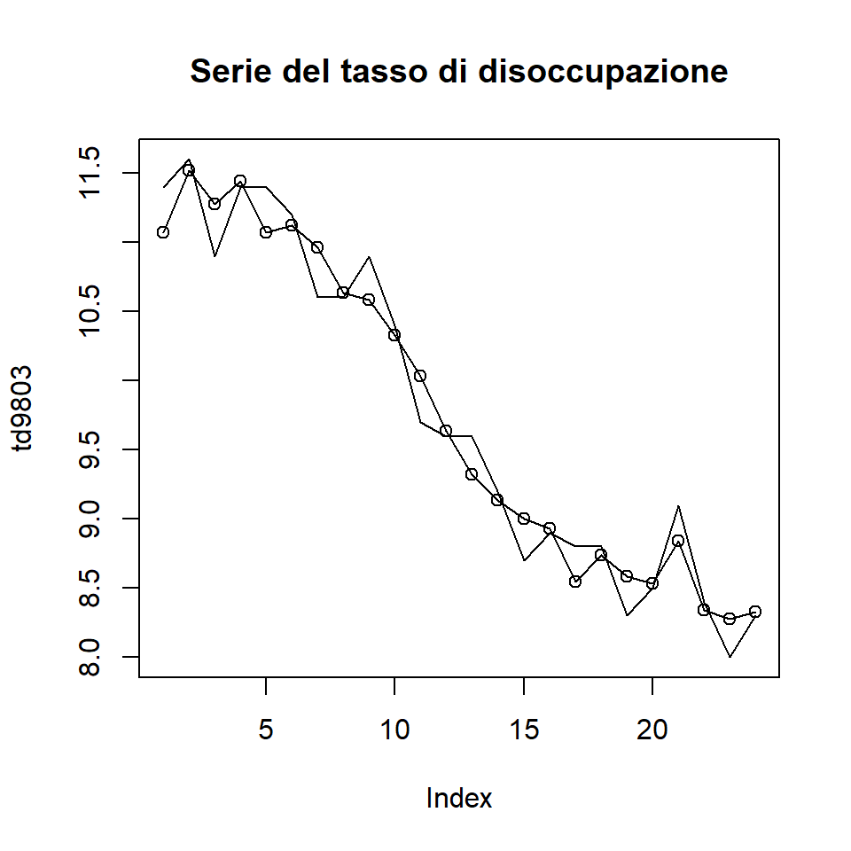
[11.07 11.52 11.27 11.44 11.07 11.12 10.96 10.64 10.59 10.33 10.03 9.63
9.32 9.14 9. 8.93 8.55 8.74 8.58 8.53 8.84 8.34 8.27 8.33]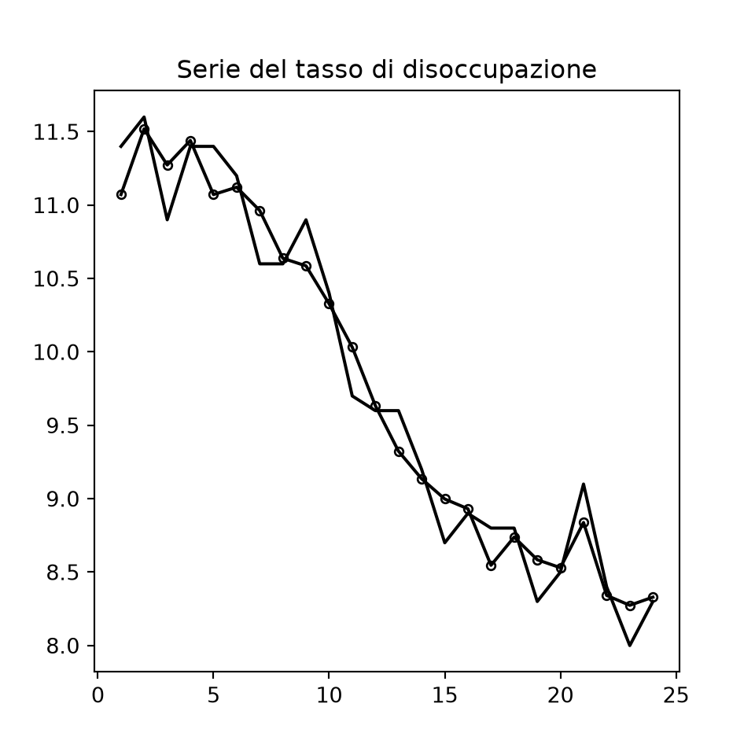
Le oscillazioni della serie destagionalizzata dipendono adesso esclusivamente dalla presenza del trend-ciclo che, in questo modo, può essere meglio studiato ed eventualmente scomposto nelle due componenti elementari \(T\) e \(C\).
In altri termini, il tasso di disoccupazione dell’11,4% registrato nel primo trimestre 1998 subisce l’influenza negativa degli andamenti stagionali del primo trimestre nella misura di 0,3 punti percentuali; infatti, nello stesso primo trimestre del 1998, la serie destagionalizzata registra un tasso dell’11,1%. Allo stesso modo, nel terzo trimestre 2003, la serie originale ha un valore dell’8,0% contro l’8,3% di quella destagionalizzata, mostrando, stavolta, l’effetto positivo del terzo trimestre nella riduzione del tasso di disoccupazione.
Nell’ipotesi che il trend segua una forma lineare, poiché la serie destagionalizzata è \(Y_{dest}=T\cdot C\), si può estrarre il ciclo tramite il rapporto
\[ C=Y_{dest}/T \tag{4.10} \]
Nel caso dell’esempio, il relativo grafico è ottenuto con gli usuali comandi (Figura 4.9).
1 2 3 4 5 6 7 8 9 10 11 12 13 14 15 16
0.95 1.01 1.00 1.03 1.01 1.03 1.03 1.02 1.03 1.02 1.00 0.98 0.96 0.96 0.96 0.97
17 18 19 20 21 22 23 24
0.95 0.98 0.98 1.00 1.05 1.01 1.02 1.05 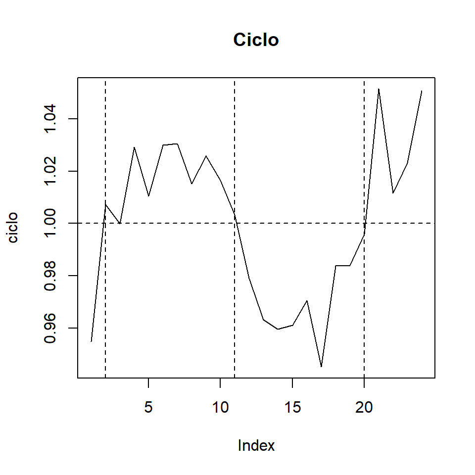
[0.95 1.01 1. 1.03 1.01 1.03 1.03 1.02 1.03 1.02 1. 0.98 0.96 0.96
0.96 0.97 0.95 0.98 0.98 1. 1.05 1.01 1.02 1.05]proc reg data=td_dest noprint;
model dest = tempo;
output out=td_ciclo p=trend;
run;
quit;
data td_ciclo; set td_ciclo; ciclo = dest / trend; run;
proc sgplot data=td_ciclo;
title "Ciclo";
series x=tempo y=ciclo;
refline 1 / axis=y lineattrs=(pattern=dash);
refline 2 11 20 / axis=x lineattrs=(pattern=dash);
run;Sono messe in evidenza possibili inversioni di ciclo in corrispondenza del secondo, dell’undicesimo e del ventesimo trimestre, ossia 1998.II, 2000.III e 2002.IV.
Notiamo che avremmo potuto ottenere la media mobile centrata di ordine 4 anche con il già visto filter(), tramite un adeguato insieme di pesi. Lasciamo il calcolo come esercizio al lettore, non prima di aver chiarito la procedura su dati di fantasia.
La funzione di regressione, oltre che per l’analisi del trend, può tornare utile per isolare la componente stagionale tramite variabili dummy aggiunte tra le variabili esplicative e utilizzate come etichette stagionali. Nel caso di dati mensili aggiungeremo 11 variabili dummy, che assumeranno valore 0 o valore 1 in corrispondenza delle osservazioni relative al mese rappresentato; la dodicesima variabile dummy non è inclusa per evitare ridondanza statistica, poiché il suo effetto è già scaricato sulla costante del modello. La scelta di quale dummy escludere è del tutto arbitraria e non incide sulle conclusioni delle analisi; sul punto si tornerà nelle sezioni successive.
Mantenendo l’esempio di dati mensili, stimeremo un modello del tipo
\[ Y=a+bt+c_{1}D_{1}+c_{2}D_{2}+...+c_{10}D_{10}+c_{11}D_{11} \tag{4.11} \]
in cui è stata omessa la dodicesima dummy, relativa al mese di dicembre; qui, dunque, la componente stagionale misura l’impatto dei mesi rispetto al mese di dicembre, quale termine base di riferimento. \(a+bt\) rappresenta il trend o trend-ciclo (in quest’ultimo caso si usa ipotizzare un polinomio di grado superiore al primo), mentre \(c_{1}D_{1}+c_{2}D_{2}+...+c_{10}D_{10}+c_{11}D_{11}\) esprime appunto la componente stagionale, tale che \(D_{i}=1\) nell’\(i\)-esimo mese e 0 altrimenti. Va notato che il modello applica implicitamente una struttura di stagionalità costante.
Carichiamo i dati contenuti nel file prodotto.csv, relativi alle vendite in quintali di un generico prodotto di consumo tra gennaio 2001 e dicembre 2006. Costruiamo un indice di tempo che R possa utilizzare per la creazione delle variabili dummy di interesse.
[1] 1 2 3 4 5 6 7 8 9 10 11 12 1 2 3 4 5 6 7 8 9 10 11 12 1
[26] 2 3 4 5 6 7 8 9 10 11 12 1 2 3 4 5 6 7 8 9 10 11 12 1 2
[51] 3 4 5 6 7 8 9 10 11 12 1 2 3 4 5 6 7 8 9 10 11 12
Levels: 1 2 3 4 5 6 7 8 9 10 11 12[ 1 2 3 4 5 6 7 8 9 10 11 12 1 2 3 4 5 6 7 8 9 10 11 12
1 2 3 4 5 6 7 8 9 10 11 12 1 2 3 4 5 6 7 8 9 10 11 12
1 2 3 4 5 6 7 8 9 10 11 12 1 2 3 4 5 6 7 8 9 10 11 12]Abbiamo così creato 12 livelli, ognuno in corrispondenza di un mese, per l’intero intervallo temporale tra il 2001 e il 2006. Chiediamo a R di indicarci quale criterio utilizzerà nella costruzione delle variabili dummy relative all’oggetto livelli: R elimina di default il primo livello, qui il mese di gennaio. Se invece volessimo eliminare dicembre, scriveremmo
2 3 4 5 6 7 8 9 10 11 12
1 0 0 0 0 0 0 0 0 0 0 0
2 1 0 0 0 0 0 0 0 0 0 0
3 0 1 0 0 0 0 0 0 0 0 0
4 0 0 1 0 0 0 0 0 0 0 0
5 0 0 0 1 0 0 0 0 0 0 0
6 0 0 0 0 1 0 0 0 0 0 0
7 0 0 0 0 0 1 0 0 0 0 0
8 0 0 0 0 0 0 1 0 0 0 0
9 0 0 0 0 0 0 0 1 0 0 0
10 0 0 0 0 0 0 0 0 1 0 0
11 0 0 0 0 0 0 0 0 0 1 0
12 0 0 0 0 0 0 0 0 0 0 1 1 2 3 4 5 6 7 8 9 10 11
1 1 0 0 0 0 0 0 0 0 0 0
2 0 1 0 0 0 0 0 0 0 0 0
3 0 0 1 0 0 0 0 0 0 0 0
4 0 0 0 1 0 0 0 0 0 0 0
5 0 0 0 0 1 0 0 0 0 0 0
6 0 0 0 0 0 1 0 0 0 0 0
7 0 0 0 0 0 0 1 0 0 0 0
8 0 0 0 0 0 0 0 1 0 0 0
9 0 0 0 0 0 0 0 0 1 0 0
10 0 0 0 0 0 0 0 0 0 1 0
11 0 0 0 0 0 0 0 0 0 0 1
12 0 0 0 0 0 0 0 0 0 0 0[[1 0 0 0 0 0 0 0 0 0 0]
[0 1 0 0 0 0 0 0 0 0 0]
[0 0 1 0 0 0 0 0 0 0 0]
[0 0 0 1 0 0 0 0 0 0 0]
[0 0 0 0 1 0 0 0 0 0 0]
[0 0 0 0 0 1 0 0 0 0 0]
[0 0 0 0 0 0 1 0 0 0 0]
[0 0 0 0 0 0 0 1 0 0 0]
[0 0 0 0 0 0 0 0 1 0 0]
[0 0 0 0 0 0 0 0 0 1 0]
[0 0 0 0 0 0 0 0 0 0 1]
[0 0 0 0 0 0 0 0 0 0 0]]Adesso R non inserirà la dummy di dicembre. Supponiamo che il modello sia di tipo esponenziale, necessitando quindi dei logaritmi per la linearizzazione
\[ \begin{gathered}Y=ab^{t}c_{1}^{D_{1}}c_{2}^{D_{2}}...c_{11}^{D_{11}}\to \\ \log Y=\log a+t\log b+D_{1}\log c_{1}+D_{2}\log c_{2}+...+D_{11}\log c_{11}\end{gathered} \tag{4.12} \]
Pertanto, \((b-1)\cdot 100\) è la stima del tasso di crescita mensile composto della nostra serie \(Y\), mentre i coefficienti \(c_{i}\) sono i moltiplicatori stagionali rispetto al mese di dicembre. Procediamo alla stima.
Call:
lm(formula = log(Y) ~ casi + livelli)
Residuals:
Min 1Q Median 3Q Max
-0.18644 -0.03664 0.01913 0.05285 0.08395
Coefficients:
Estimate Std. Error t value Pr(>|t|)
(Intercept) 2.514425 0.035469 70.890 < 2e-16 ***
casi 0.002409 0.000430 5.602 5.85e-07 ***
livelli1 -0.098623 0.043430 -2.271 0.026822 *
livelli2 -0.140320 0.043386 -3.234 0.002000 **
livelli3 0.008308 0.043345 0.192 0.848653
livelli4 0.101321 0.043309 2.340 0.022714 *
livelli5 0.192180 0.043277 4.441 4.00e-05 ***
livelli6 0.253101 0.043249 5.852 2.27e-07 ***
livelli7 0.276878 0.043226 6.405 2.72e-08 ***
livelli8 0.289783 0.043206 6.707 8.46e-09 ***
livelli9 0.251977 0.043191 5.834 2.43e-07 ***
livelli10 0.239002 0.043181 5.535 7.53e-07 ***
livelli11 0.167562 0.043174 3.881 0.000265 ***
---
Signif. codes: 0 '***' 0.001 '**' 0.01 '*' 0.05 '.' 0.1 ' ' 1
Residual standard error: 0.07478 on 59 degrees of freedom
Multiple R-squared: 0.8442, Adjusted R-squared: 0.8125
F-statistic: 26.65 on 12 and 59 DF, p-value: < 2.2e-16(Intercept) casi livelli1 livelli2 livelli3 livelli4
12.3594948 1.0024120 0.9060840 0.8690798 1.0083429 1.1066321
livelli5 livelli6 livelli7 livelli8 livelli9 livelli10
1.2118886 1.2880138 1.3190052 1.3361373 1.2865659 1.2699804
livelli11
1.1824190 OLS Regression Results
==============================================================================
Dep. Variable: np.log(prodotto) R-squared: 0.844
Model: OLS Adj. R-squared: 0.813
Method: Least Squares F-statistic: 26.65
Date: sab, 31 ott 2026 Prob (F-statistic): 2.01e-19
Time: 20:08:52 Log-Likelihood: 91.720
No. Observations: 72 AIC: -157.4
Df Residuals: 59 BIC: -127.8
Df Model: 12
Covariance Type: nonrobust
=============================================================================================================
coef std err t P>|t| [0.025 0.975]
-------------------------------------------------------------------------------------------------------------
Intercept 2.5144 0.035 70.890 0.000 2.443 2.585
C(livelli, Treatment(reference=12))[T.1] -0.0986 0.043 -2.271 0.027 -0.186 -0.012
C(livelli, Treatment(reference=12))[T.2] -0.1403 0.043 -3.234 0.002 -0.227 -0.054
C(livelli, Treatment(reference=12))[T.3] 0.0083 0.043 0.192 0.849 -0.078 0.095
C(livelli, Treatment(reference=12))[T.4] 0.1013 0.043 2.340 0.023 0.015 0.188
C(livelli, Treatment(reference=12))[T.5] 0.1922 0.043 4.441 0.000 0.106 0.279
C(livelli, Treatment(reference=12))[T.6] 0.2531 0.043 5.852 0.000 0.167 0.340
C(livelli, Treatment(reference=12))[T.7] 0.2769 0.043 6.405 0.000 0.190 0.363
C(livelli, Treatment(reference=12))[T.8] 0.2898 0.043 6.707 0.000 0.203 0.376
C(livelli, Treatment(reference=12))[T.9] 0.2520 0.043 5.834 0.000 0.166 0.338
C(livelli, Treatment(reference=12))[T.10] 0.2390 0.043 5.535 0.000 0.153 0.325
C(livelli, Treatment(reference=12))[T.11] 0.1676 0.043 3.881 0.000 0.081 0.254
casi 0.0024 0.000 5.602 0.000 0.002 0.003
==============================================================================
Omnibus: 7.869 Durbin-Watson: 0.052
Prob(Omnibus): 0.020 Jarque-Bera (JB): 8.369
Skew: -0.820 Prob(JB): 0.0152
Kurtosis: 2.688 Cond. No. 527.
==============================================================================
Notes:
[1] Standard Errors assume that the covariance matrix of the errors is correctly specified.Intercept 12.359495
C(livelli, Treatment(reference=12))[T.1] 0.906084
C(livelli, Treatment(reference=12))[T.2] 0.869080
C(livelli, Treatment(reference=12))[T.3] 1.008343
C(livelli, Treatment(reference=12))[T.4] 1.106632
C(livelli, Treatment(reference=12))[T.5] 1.211889
C(livelli, Treatment(reference=12))[T.6] 1.288014
C(livelli, Treatment(reference=12))[T.7] 1.319005
C(livelli, Treatment(reference=12))[T.8] 1.336137
C(livelli, Treatment(reference=12))[T.9] 1.286566
C(livelli, Treatment(reference=12))[T.10] 1.269980
C(livelli, Treatment(reference=12))[T.11] 1.182419
casi 1.002412
dtype: float64Con l’esclusione del mese di marzo, gli effetti stagionali appaiono tutti statisticamente significativi, ma per determinare i coefficienti originari occorre l’antilogaritmo. Si desume che il livello delle vendite del prodotto era uguale a 12,4 quintali a inizio serie (intercetta), con un tasso di variazione mensile composto dello 0,24% nell’arco temporale considerato. Nello specifico, nel mese di gennaio, rispetto al mese di dicembre, le vendite si sono ridotte mediamente del 9,39%. Al contrario, il mese di novembre (sempre rispetto a dicembre) registra un incremento del 18,24% circa.
La Figura 4.10 rappresenta la serie originaria, il trend-ciclo espresso in forma lineare e la componente stagionale costante ottenuta tramite le variabili dummy. Notiamo la correzione di scala -0.1+mean(logY), utile per una più comoda rappresentazione grafica.
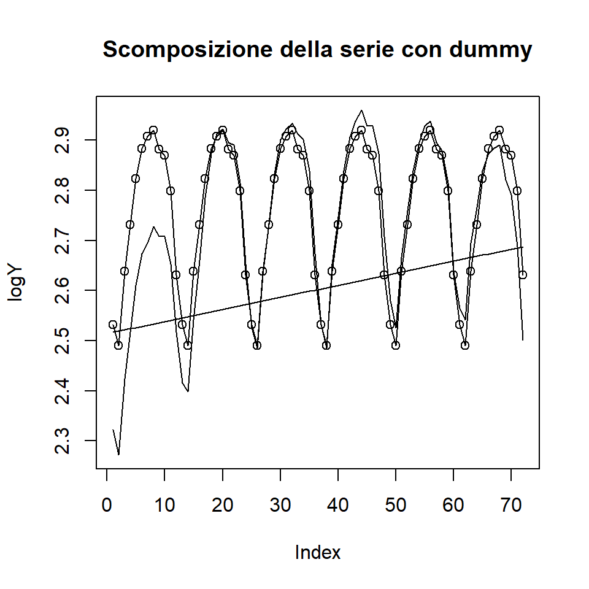
logY = np.log(prod["prodotto"])
tc = modello.params.iloc[0] + modello.params["casi"] * prod["casi"]
stag = modello.fittedvalues - tc
plt.figure(figsize=(5, 5))
plt.plot(prod["casi"], logY, color="black")
plt.plot(prod["casi"], tc, color="black")
plt.plot(prod["casi"], -0.1 + logY.mean() + stag, "o-", color="black", markerfacecolor="none", markersize=3)
plt.title("Scomposizione della serie con dummy")
plt.show()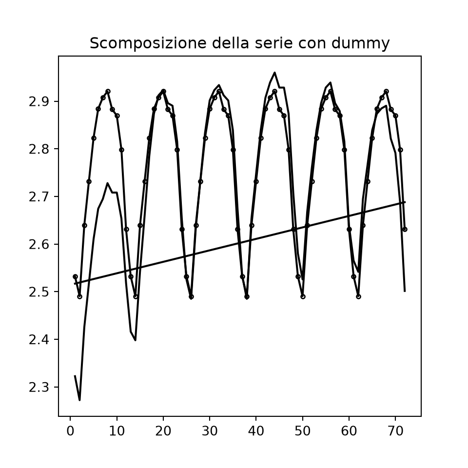
Per loro natura, i modelli finora trattati non consentono previsioni affidabili, se non in condizioni particolarmente stringenti e comunque limitate al breve periodo. Per affrontare in modo soddisfacente il tema della previsione è necessario considerare metodi di stima e modelli più raffinati, passando, per esempio, dall’approccio deterministico di molti metodi classici a uno stocastico, tipico dei modelli ARIMA. Sul punto torneremo successivamente, ma qui vale la pena citare un caso particolare, utile con serie non stagionali e non soggette a fluttuazioni ampie e frequenti. È il caso del modello autoregressivo, cioè di un modello che spiega la serie \(Y\) con la stessa variabile ritardata nel tempo
\[ Y_{t}=a_{0}+a_{1}Y_{t-1}+...+a_{p}Y_{t-p}+e_{t} \tag{4.13} \]
ossia un modello autoregressivo di ordine \(p\), \(AR(p)\).
Va notato che la stima di questi modelli con OLS, come in genere per tutti i modelli lineari, necessita di alcune condizioni da sottoporre a verifica. Si intuisce, per la natura autoregressiva del modello, che le stime dei minimi quadrati per specificazioni di ordine superiore al primo sono inadeguate; riprenderemo il punto più avanti.
Carichiamo i dati contenuti nel file pil.csv, con riguardo al PIL dell’Italia espresso in milioni di euro costanti. Stimiamo un modello autoregressivo del terzo ordine. Notiamo l’uso del comando embed() per costruire la matrice della variabile PIL00 laggata al tempo 0 (cioè senza ritardo) e laggata ai tempi 1, 2 e 3. Dal summary() del modello estraiamo i coefficienti.
Call:
lm(formula = Y ~ Y1 + Y2 + Y3, data = pil)
Residuals:
Min 1Q Median 3Q Max
-26897.5 -5690.6 93.2 6413.5 25618.3
Coefficients:
Estimate Std. Error t value Pr(>|t|)
(Intercept) 49794.0304 24462.8772 2.035 0.056 .
Y1 1.2466 0.2245 5.552 2.36e-05 ***
Y2 -0.4802 0.3375 -1.423 0.171
Y3 0.2037 0.2109 0.965 0.346
---
Signif. codes: 0 '***' 0.001 '**' 0.01 '*' 0.05 '.' 0.1 ' ' 1
Residual standard error: 11400 on 19 degrees of freedom
Multiple R-squared: 0.9925, Adjusted R-squared: 0.9913
F-statistic: 834.5 on 3 and 19 DF, p-value: < 2.2e-16==============================================================================
coef std err t P>|t| [0.025 0.975]
------------------------------------------------------------------------------
Intercept 4.979e+04 2.45e+04 2.035 0.056 -1407.360 1.01e+05
Y1 1.2466 0.225 5.552 0.000 0.777 1.717
Y2 -0.4802 0.338 -1.423 0.171 -1.187 0.226
Y3 0.2037 0.211 0.965 0.346 -0.238 0.645
==============================================================================Soltanto il primo ritardo appare statisticamente significativo. Ricalcoliamo le stime eliminando prima il terzo ritardo e poi anche quello di ordine 2.
Estimate Std. Error t value Pr(>|t|)
(Intercept) 43680.5511030 2.358905e+04 1.851730 7.888630e-02
Y1 1.1998272 2.188924e-01 5.481356 2.296787e-05
Y2 -0.2267504 2.118390e-01 -1.070390 2.971920e-01 Estimate Std. Error t value Pr(>|t|)
(Intercept) 5.523463e+04 2.104709e+04 2.624335 1.584716e-02
Y1 9.664385e-01 1.935744e-02 49.925936 2.615288e-23==============================================================================
coef std err t P>|t| [0.025 0.975]
------------------------------------------------------------------------------
Intercept 4.368e+04 2.36e+04 1.852 0.079 -5525.349 9.29e+04
Y1 1.1998 0.219 5.481 0.000 0.743 1.656
Y2 -0.2268 0.212 -1.070 0.297 -0.669 0.215
============================================================================================================================================================
coef std err t P>|t| [0.025 0.975]
------------------------------------------------------------------------------
Intercept 5.523e+04 2.1e+04 2.624 0.016 1.15e+04 9.9e+04
Y1 0.9664 0.019 49.926 0.000 0.926 1.007
==============================================================================Le stime ottenute suggeriscono la scelta di un modello parsimonioso, con un solo ritardo. Va notato l’alto valore della t di Student del coefficiente di \(Y1\), la cui stima, peraltro, non appare molto diversa tra i vari modelli; come sarà chiarito più avanti, questo può essere segnale di una buona specificazione. A questo punto è facile ottenere la previsione per gli anni successivi (Figura 4.11).
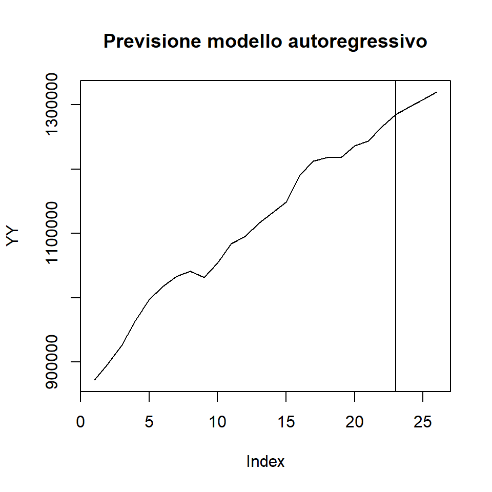
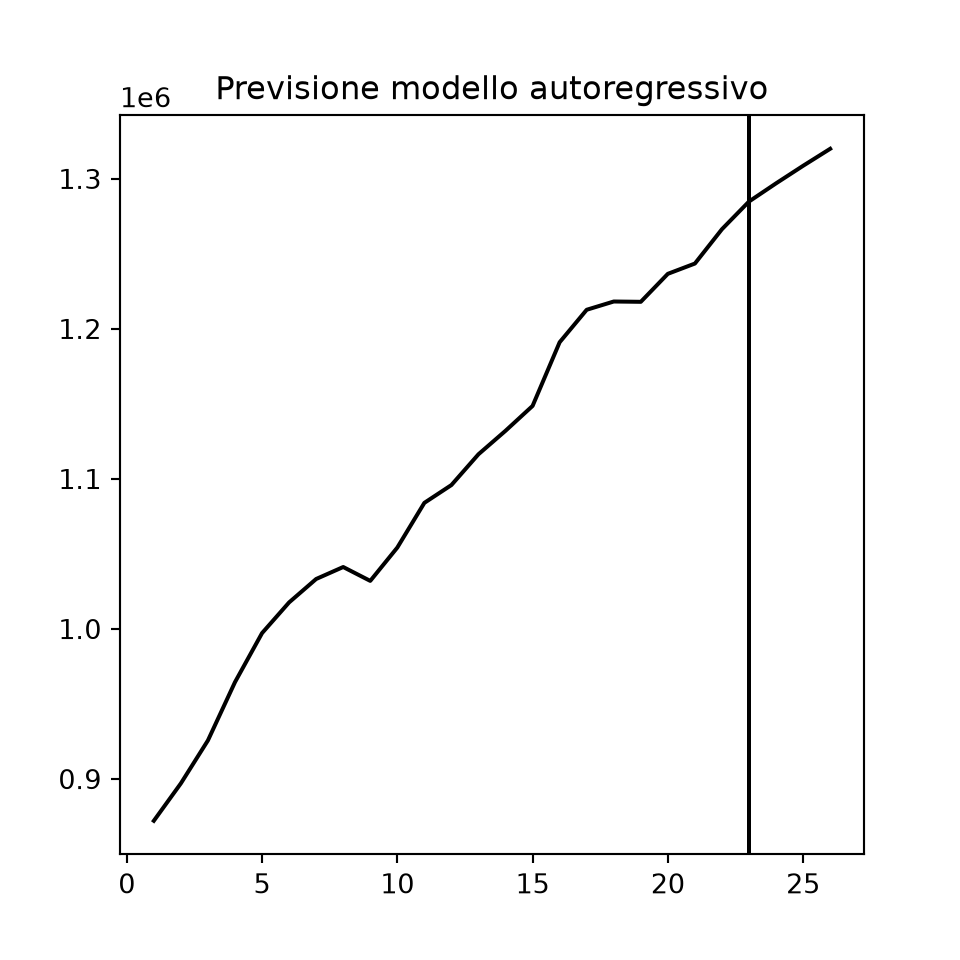
proc reg data=pil_ar outest=b_ar1 noprint;
model Y = Y1;
run;
quit;
/* previsioni ricorsive a 3 passi */
data prev_ar;
set pil_ar end=fine;
if _n_ = 1 then set b_ar1(keep=Intercept Y1 rename=(Y1=a1));
caso = _n_; output;
if fine then do;
do h = 1 to 3;
Y = Intercept + a1*Y; caso + 1; Anni + 1; output;
end;
end;
keep caso Anni Y;
run;
proc sgplot data=prev_ar;
title "Previsione modello autoregressivo";
series x=caso y=Y;
refline 23 / axis=x;
run;L’ultimo anno osservato del PIL, cioè il 2007, non corrisponde più all’osservazione 26 dei dati originari, ma al 23° caso, poiché le operazioni di ritardo sulla variabile \(Y\) hanno eliminato i primi 3 anni. Pertanto, il 2007 corrisponderà al 23° caso e le previsioni per il 2008 e il 2009 corrisponderanno al valore teorico relativo ai casi 24 e 25.
Nel modello autoregressivo di ordine \(p\) la \(Y\) è spiegata da se stessa ritardata nel tempo sino al periodo \(t-p\), ma un modello più complesso potrebbe includere anche altre esplicative \(X\), anch’esse ritardate o meno, per esempio
\[ Y_{t}=\alpha +\beta_{1}Y_{t-1}+\beta_{2}Y_{t-2}+\gamma_{0}X_{t}+\gamma_{1}X_{t-1} \tag{4.14} \]
Nel caso più semplice potrebbe essere presente soltanto la \(X\) ritardata per qualche tempo; avremo così un modello a ritardi distribuiti del tipo
\[ Y_{t}=\alpha +\gamma_{0}X_{t}+...+\gamma_{k}X_{t-k}+...+\gamma_{K}X_{t-K} \tag{4.15} \]
in cui \(k=0,...,K\).
Carichiamo i dati di un’azienda contenuti nel file corsi.csv, relativi alle perdite in dollari per incidenti sul lavoro e al numero di ore di formazione dei dipendenti sulla prevenzione degli incidenti stessi. Stimiamo un modello a ritardi distribuiti tra perdite e ore sino al ritardo 4, su 60 mesi (5 anni) di osservazioni.
Call:
lm(formula = y ~ xx)
Residuals:
Min 1Q Median 3Q Max
-13120.4 -1935.1 340.1 3495.3 9317.0
Coefficients:
Estimate Std. Error t value Pr(>|t|)
(Intercept) 91173.32 1949.85 46.759 < 2e-16 ***
xxlag0 -131.99 47.44 -2.783 0.007589 **
xxlag1 -449.86 47.56 -9.459 1.01e-12 ***
xxlag2 -422.52 46.78 -9.032 4.40e-12 ***
xxlag3 -187.10 47.64 -3.927 0.000264 ***
xxlag4 -27.77 47.66 -0.583 0.562736
---
Signif. codes: 0 '***' 0.001 '**' 0.01 '*' 0.05 '.' 0.1 ' ' 1
Residual standard error: 5381 on 50 degrees of freedom
Multiple R-squared: 0.7599, Adjusted R-squared: 0.7358
F-statistic: 31.64 on 5 and 50 DF, p-value: 2.217e-14==============================================================================
coef std err t P>|t| [0.025 0.975]
------------------------------------------------------------------------------
Intercept 9.117e+04 1949.850 46.759 0.000 8.73e+04 9.51e+04
lag0 -131.9943 47.436 -2.783 0.008 -227.272 -36.716
lag1 -449.8597 47.557 -9.459 0.000 -545.380 -354.339
lag2 -422.5183 46.778 -9.032 0.000 -516.474 -328.562
lag3 -187.1041 47.641 -3.927 0.000 -282.794 -91.415
lag4 -27.7710 47.662 -0.583 0.563 -123.503 67.961
==============================================================================proc import datafile="data/corsi.csv" out=corsi dbms=dlm replace;
delimiter=";"; getnames=yes;
run;
data corsi_dl;
set corsi;
lag0 = orecorsi; lag1 = lag1(orecorsi); lag2 = lag2(orecorsi);
lag3 = lag3(orecorsi); lag4 = lag4(orecorsi);
if not missing(lag4);
run;
proc reg data=corsi_dl outest=b_dl;
model perdite = lag0-lag4;
run;
quit;In assenza di ore di formazione le perdite mensili si aggirano attorno a 91.173 dollari, mentre si riducono (a parità di condizioni) di circa 132 dollari per un’ora in più di formazione durante lo stesso mese, di 450 dollari per un’ora in più somministrata nel mese precedente, di 423 per due mesi precedenti, di 187 per tre mesi e di 28 dollari per il quarto mese, ma quest’ultima stima non appare significativa. Si può concludere che l’azienda dovrebbe ripetere i corsi di formazione regolarmente ogni tre o al più quattro mesi, mentre l’effetto maggiore si registra a distanza di 1-2 mesi dalla formazione impartita. La riduzione complessiva della perdita, ottenuta con gli effetti manifestatisi tra il mese corrente e sino a quattro mesi dopo, è di circa 1.219 dollari
mentre la scelta del ritardo più opportuno da includere nella specificazione potrebbe seguire logiche simili a quelle utilizzate per il modello autoregressivo.
Il software mette a disposizione degli utenti anche funzioni predefinite, che semplificano alcuni dei calcoli finora effettuati con una molteplicità di comandi. Innanzitutto, è consigliabile indicare a R tramite ts() l’oggetto da considerare serie storica. Nel caso del file prodotto.csv avremo
[1] 10.2 9.7 11.3 12.4 13.6 14.5 14.8 15.3 15.0 15.0 14.2 12.4 11.2 11.0 12.7
[16] 14.3 16.2 17.7 18.4 18.6 18.1 18.0 16.7 14.2 12.5 12.0 13.9 15.4 17.0 18.2
[31] 18.6 18.8 18.4 18.2 17.1 14.5 12.6 12.0 14.2 15.6 17.1 18.3 18.9 19.3 18.7
[46] 18.7 17.7 15.0 13.2 12.5 14.4 15.8 17.1 18.1 18.7 18.9 18.1 17.8 16.7 14.0
[61] 13.0 12.7 14.8 15.9 17.1 17.7 17.9 18.0 16.8 16.3 14.7 12.2 Jan Feb Mar Apr May Jun Jul Aug Sep Oct Nov Dec
2001 10.2 9.7 11.3 12.4 13.6 14.5 14.8 15.3 15.0 15.0 14.2 12.4
2002 11.2 11.0 12.7 14.3 16.2 17.7 18.4 18.6 18.1 18.0 16.7 14.2
2003 12.5 12.0 13.9 15.4 17.0 18.2 18.6 18.8 18.4 18.2 17.1 14.5
2004 12.6 12.0 14.2 15.6 17.1 18.3 18.9 19.3 18.7 18.7 17.7 15.0
2005 13.2 12.5 14.4 15.8 17.1 18.1 18.7 18.9 18.1 17.8 16.7 14.0
2006 13.0 12.7 14.8 15.9 17.1 17.7 17.9 18.0 16.8 16.3 14.7 12.2Notiamo la sintassi, con l’indicazione della frequenza stagionale e del periodo di inizio della serie. Adesso decompose() consente un’immediata scomposizione della serie. Nell’ipotesi di modello moltiplicativo (attributo abbreviato mult), con trend-ciclo (semplicemente trend nella Figura 4.12) ottenuto tramite media mobile centrata di ordine 12, scriveremo
ottenendo per l’appunto la Figura 4.12, mentre l’oggetto scomponi avrà registrato al proprio interno i valori assunti dalle componenti.
Un altro modo per analizzare il trend in un approccio classico è ricorrere alla regressione locale, o LOESS. Il modello di regressione che ne scaturisce è non parametrico, perché la funzione non appartiene a una specifica classe parametrica, ma richiede soltanto la presenza di alcune condizioni di regolarità; è la soluzione adottata dal comando stl(), che genera la Figura 4.13.
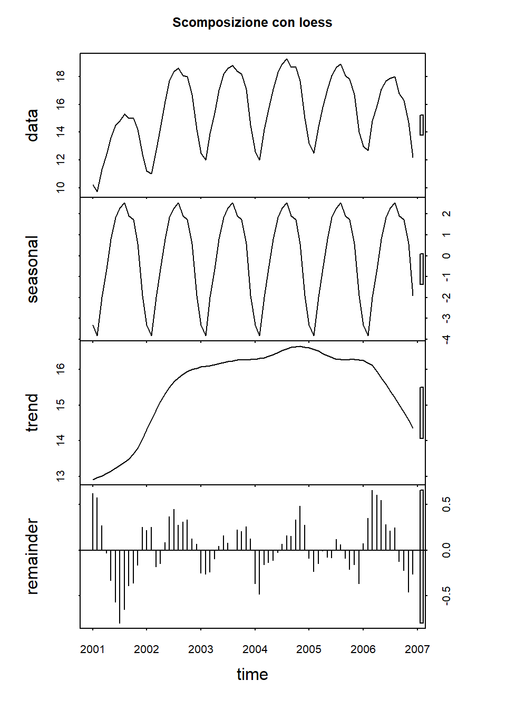
seasonal trend remainder
Jan 2001 -3.3241095 12.90882 0.615286538
Feb 2001 -3.8325768 12.95874 0.573837007
Mar 2001 -1.9743773 13.00866 0.265720663
Apr 2001 -0.6442623 13.07666 -0.032396555
May 2001 0.7858528 13.14466 -0.330513773
Jun 2001 1.8390984 13.22519 -0.564285207
Jul 2001 2.2923439 13.30571 -0.798056547
Aug 2001 2.5533190 13.39072 -0.644036267
Sep 2001 1.9142943 13.47572 -0.390016113
Oct 2001 1.7250664 13.63527 -0.360335376
Nov 2001 0.5691719 13.79482 -0.163987966
Dec 2001 -1.9038208 14.05188 0.251937691
Jan 2002 -3.3241095 14.30895 0.215159485
Feb 2002 -3.8325768 14.58343 0.249149692
Mar 2002 -1.9743773 14.85790 -0.183526914
Apr 2002 -0.6442623 15.09322 -0.148957940
May 2002 0.7858528 15.32854 0.085611033
Jun 2002 1.8390984 15.49630 0.364598092
Jul 2002 2.2923439 15.66407 0.443585245
Aug 2002 2.5533190 15.77085 0.275828368
Sep 2002 1.9142943 15.87763 0.308071363
Oct 2002 1.7250664 15.94278 0.332150880
Nov 2002 0.5691719 16.00793 0.122897068
Dec 2002 -1.9038208 16.03969 0.064126410
Jan 2003 -3.3241095 16.07146 -0.247348113
Feb 2003 -3.8325768 16.09149 -0.258912198
Mar 2003 -1.9743773 16.11152 -0.237143098
Apr 2003 -0.6442623 16.14040 -0.096141547
May 2003 0.7858528 16.16929 0.044860004
Jun 2003 1.8390984 16.20017 0.160733891
Jul 2003 2.2923439 16.23105 0.076607874
Aug 2003 2.5533190 16.24828 -0.001602955
Sep 2003 1.9142943 16.26552 0.220186089
Oct 2003 1.7250664 16.26983 0.205104333
Nov 2003 0.5691719 16.27414 0.256689250
Dec 2003 -1.9038208 16.28125 0.122565969
Jan 2004 -3.3241095 16.28837 -0.364261176
Feb 2004 -3.8325768 16.31101 -0.478432912
Mar 2004 -1.9743773 16.33365 -0.159271462
Apr 2004 -0.6442623 16.37919 -0.134930829
May 2004 0.7858528 16.42474 -0.110590195
Jun 2004 1.8390984 16.48419 -0.023289453
Jul 2004 2.2923439 16.54364 0.064011384
Aug 2004 2.5533190 16.58886 0.157822847
Sep 2004 1.9142943 16.63407 0.151634184
Oct 2004 1.7250664 16.64360 0.331329847
Nov 2004 0.5691719 16.65314 0.477692182
Dec 2004 -1.9038208 16.63256 0.271260405
Jan 2005 -3.3241095 16.61198 -0.087875236
Feb 2005 -3.8325768 16.56517 -0.232588725
Mar 2005 -1.9743773 16.51835 -0.143969029
Apr 2005 -0.6442623 16.45478 -0.010515757
May 2005 0.7858528 16.39121 -0.077062486
Jun 2005 1.8390984 16.34140 -0.080502226
Jul 2005 2.2923439 16.29160 0.116058129
Aug 2005 2.5533190 16.28340 0.063276060
Sep 2005 1.9142943 16.27521 -0.089506135
Oct 2005 1.7250664 16.28197 -0.207033148
Nov 2005 0.5691719 16.28872 -0.157893488
Dec 2005 -1.9038208 16.27042 -0.366594454
Jan 2006 -3.3241095 16.25211 0.072000716
Feb 2006 -3.8325768 16.18661 0.345966615
Mar 2006 -1.9743773 16.12111 0.653265700
Apr 2006 -0.6442623 15.94527 0.598993566
May 2006 0.7858528 15.76943 0.544721433
Jun 2006 1.8390984 15.58448 0.276417533
Jul 2006 2.2923439 15.39954 0.208113728
Aug 2006 2.5533190 15.20359 0.243088127
Sep 2006 1.9142943 15.00764 -0.121937601
Oct 2006 1.7250664 14.79702 -0.222088675
Nov 2006 0.5691719 14.58640 -0.455573078
Dec 2006 -1.9038208 14.36465 -0.260830607from statsmodels.tsa.seasonal import STL
# s.window="periodic" di R equivale a una stagionalità costante:
# in statsmodels si approssima con una finestra stagionale molto ampia
scomponi2 = STL(y.to_timestamp(), period=12, seasonal=999).fit()
print(pd.DataFrame({"seasonal": scomponi2.seasonal, "trend": scomponi2.trend,
"remainder": scomponi2.resid}).round(4).head(12)) seasonal trend remainder
2001-01-01 -3.0028 12.9326 0.2702
2001-02-01 -3.5792 12.9810 0.2982
2001-03-01 -2.0860 13.0362 0.3498
2001-04-01 -0.8654 13.0987 0.1667
2001-05-01 0.5442 13.1682 -0.1124
2001-06-01 1.6593 13.2439 -0.4032
2001-07-01 2.0176 13.3244 -0.5420
2001-08-01 2.2782 13.4077 -0.3859
2001-09-01 1.9260 13.4914 -0.4175
2001-10-01 1.8383 13.5864 -0.4247
2001-11-01 0.7688 13.7815 -0.3503
2001-12-01 -1.5678 14.0159 -0.0481/* SAS non ha un equivalente diretto di stl(); una scomposizione in trend,
stagionalità e componente irregolare si ottiene con PROC UCM (SAS/ETS) */
proc ucm data=prod_ts;
id data interval=month;
model prodotto;
irregular;
level;
slope;
season length=12 type=trig;
estimate;
forecast plot=decomp;
run;Un altro modo interessante prevede di rappresentare la serie tramite una componente di trend-ciclo \(f(t)\) e una componente stagionale per via di funzioni trigonometriche di seno e coseno. Nel caso dell’oggetto prodotto, con periodicità stagionale mensile, potremmo stimare il modello
\[ Y=\alpha_{0}+\alpha_{1}t+\alpha_{2}t^{2}+\beta_{1}\cos (t2\pi /12)+\beta_{2}\sin (t2\pi /12) \tag{4.16} \]
con
Call:
lm(formula = prodotto ~ tempo + tempo2 + coseno + seno)
Residuals:
Min 1Q Median 3Q Max
-1.74634 -0.42570 0.00334 0.45875 1.46150
Coefficients:
Estimate Std. Error t value Pr(>|t|)
(Intercept) 12.1597642 0.2641958 46.03 < 2e-16 ***
tempo 0.2066628 0.0166656 12.40 < 2e-16 ***
tempo2 -0.0023462 0.0002211 -10.61 5.51e-16 ***
coseno -1.8146713 0.1208425 -15.02 < 2e-16 ***
seno -2.2763561 0.1217213 -18.70 < 2e-16 ***
---
Signif. codes: 0 '***' 0.001 '**' 0.01 '*' 0.05 '.' 0.1 ' ' 1
Residual standard error: 0.7244 on 67 degrees of freedom
Multiple R-squared: 0.9237, Adjusted R-squared: 0.9192
F-statistic: 202.9 on 4 and 67 DF, p-value: < 2.2e-16 OLS Regression Results
==============================================================================
Dep. Variable: prodotto R-squared: 0.924
Model: OLS Adj. R-squared: 0.919
Method: Least Squares F-statistic: 202.9
Date: sab, 31 ott 2026 Prob (F-statistic): 1.15e-36
Time: 20:08:55 Log-Likelihood: -76.358
No. Observations: 72 AIC: 162.7
Df Residuals: 67 BIC: 174.1
Df Model: 4
Covariance Type: nonrobust
=================================================================================
coef std err t P>|t| [0.025 0.975]
---------------------------------------------------------------------------------
Intercept 12.1598 0.264 46.026 0.000 11.632 12.687
tempo 0.2067 0.017 12.401 0.000 0.173 0.240
I(tempo ** 2) -0.0023 0.000 -10.610 0.000 -0.003 -0.002
coseno -1.8147 0.121 -15.017 0.000 -2.056 -1.573
seno -2.2764 0.122 -18.701 0.000 -2.519 -2.033
==============================================================================
Omnibus: 0.058 Durbin-Watson: 0.909
Prob(Omnibus): 0.971 Jarque-Bera (JB): 0.198
Skew: -0.055 Prob(JB): 0.906
Kurtosis: 2.768 Cond. No. 7.32e+03
==============================================================================
Notes:
[1] Standard Errors assume that the covariance matrix of the errors is correctly specified.
[2] The condition number is large, 7.32e+03. This might indicate that there are
strong multicollinearity or other numerical problems.La corrispondente Figura 4.14 è ottenuta con i comandi seguenti.
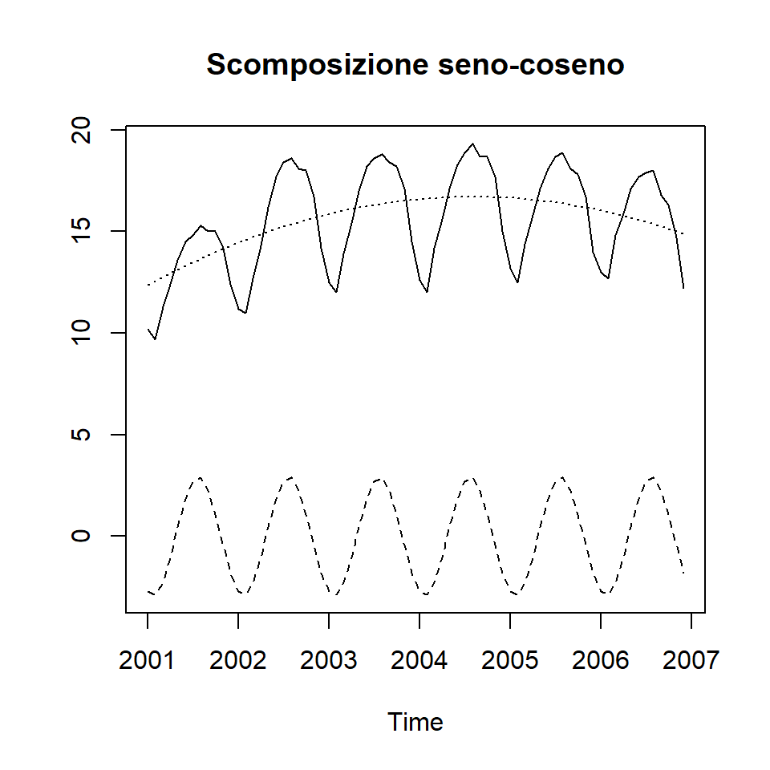
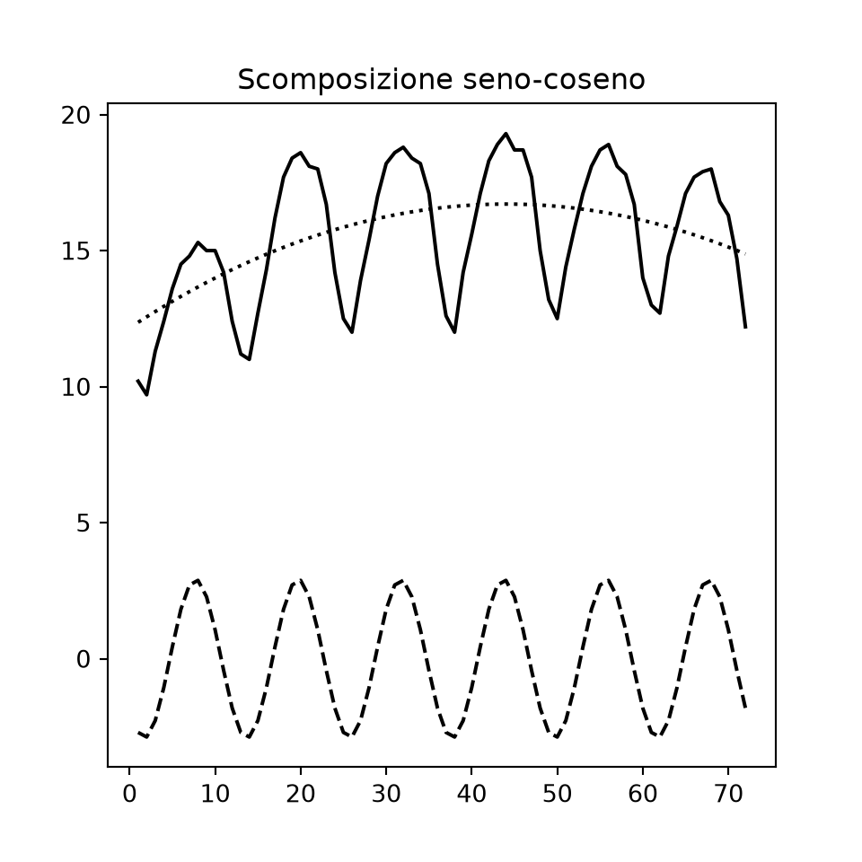
data fig414;
if _n_ = 1 then set b_trig(keep=coseno seno rename=(coseno=b_cos seno=b_sin));
set fit_trig;
stagione = b_cos*coseno + b_sin*seno;
trendciclo = yhat - stagione;
run;
proc sgplot data=fig414;
title "Scomposizione seno-coseno";
series x=tempo y=prodotto;
series x=tempo y=stagione / lineattrs=(pattern=dash);
series x=tempo y=trendciclo / lineattrs=(pattern=dot);
run;Infine, R offre funzioni già definite anche per il lisciamento esponenziale. Il modello di lisciamento presentato in precedenza è piuttosto semplice e non andrebbe applicato con scopi previsivi a serie che mostrano una marcata presenza di trend e/o di oscillazioni stagionali. In questi casi è preferibile utilizzare la procedura di Holt-Winters, per cui la previsione \(F\) al tempo \(t+Q\), nel caso di componente stagionale moltiplicativa, diviene
\[ F_{t+Q}=(a_{t}+b_{t}Q)S_{t-L+Q} \tag{4.17} \]
con
\[ \begin{aligned} a_{t} &= M_{t}=\alpha (x_{t}/S_{t-L})+(1-\alpha )(M_{t-1}+b_{t-1}) \\ b_{t} &= \beta (M_{t}-M_{t-1})+(1-\beta )b_{t-1} \\ S_{t} &= \gamma (x_{t}/M_{t})+(1-\gamma )S_{t-L} \end{aligned} \]
e \(0<\alpha <1\), \(0<\beta <1\), \(0<\gamma <1\), dove \(L\) è la lunghezza del periodo stagionale (4 per i trimestri, 12 per i mesi, ecc.); è anche possibile assumere una stagionalità additiva, con alcune modifiche alle formule, qui non riportate.
L’applicazione di Holt-Winters alla serie prodotto conduce ai seguenti risultati. Poiché non sono stati immessi manualmente, i tre parametri \(\alpha\), \(\beta\) e \(\gamma\) sono scelti automaticamente dall’algoritmo di calcolo, con una specifica procedura di ottimizzazione.
alpha
0.6899873 beta
0.3069828 gamma
1 a b s1 s2 s3 s4 s5 s6 s7 s8 s9
14.000 -0.338 0.790 0.759 0.878 0.952 1.039 1.110 1.151 1.165 1.108
s10 s11 s12
1.097 1.024 0.871 0.9999999850988388 0.4065144019143241 2.887590711987742e-10Il valore ottimo dei parametri dipende dal criterio e dai valori iniziali usati dall’algoritmo: R (HoltWinters()), statsmodels e SAS (PROC ESM) adottano scelte diverse, per cui le stime di \(\alpha\), \(\beta\) e \(\gamma\), e quindi le previsioni, possono differire leggermente.
La previsione sui 12 valori dell’anno 2007 è rappresentata nella Figura 4.15. Il grafico è ottenuto eseguendo i comandi seguenti.
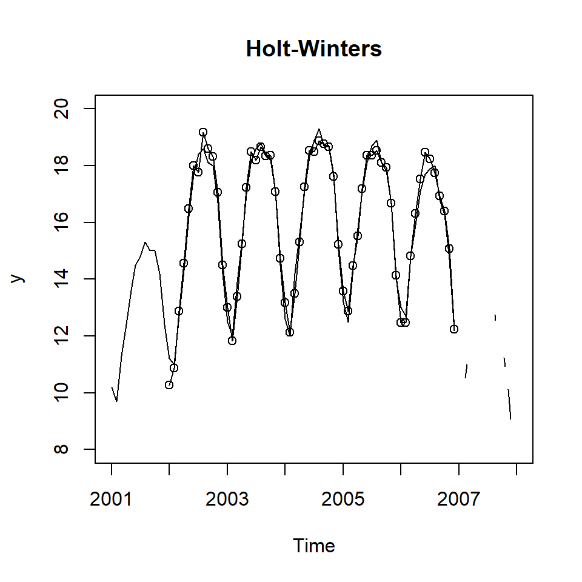
Jan Feb Mar Apr May Jun Jul
2007 10.796870 10.111399 11.400835 12.042064 12.786993 13.289897 13.387115
Aug Sep Oct Nov Dec
2007 13.155535 12.140609 11.643152 10.521086 8.6623062007-01-01 10.567
2007-02-01 9.877
2007-03-01 11.163
2007-04-01 11.916
2007-05-01 12.685
2007-06-01 13.102
2007-07-01 13.038
2007-08-01 12.807
2007-09-01 11.958
2007-10-01 11.438
2007-11-01 10.317
2007-12-01 8.435
Freq: MS, dtype: float64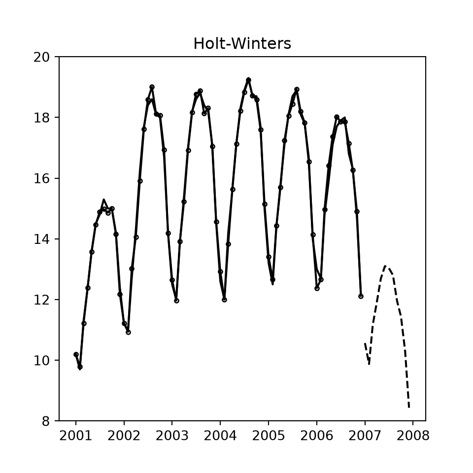
La previsione per il 2007, al di là delle oscillazioni stagionali, indica un crollo della serie, in ragione di un trend fortemente decrescente.